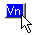
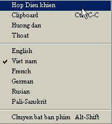
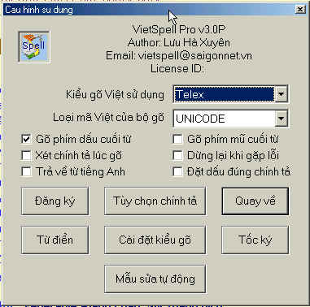
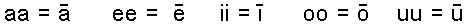
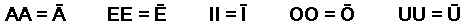
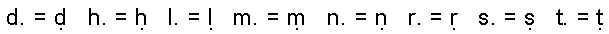
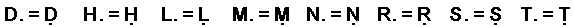
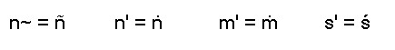
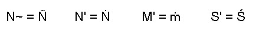

BuddhaSasana Home Page
07-02-2004
HƯỚNG DẪN CÁCH DÙNG PHÔNG CHỮ UNICODE VIỆT-PHẠN
-ooOoo-
Để đọc một số kinh sách trên trang web BuddhaSasana và trong đĩa CD Phật học BuddhaSasana, quý vị cần phải có phông chũ VU-Times cài vào máy vi tính. Đây là phông chữ Việt-Phạn (Pàli, Sanskrit) theo chuẩn quốc tế Unicode.
Muốn tạo các văn bản Việt-Pàli, quý vị cần có phần mềm VietSpell-2000, ấn bản đặc biệt, để gõ chính xác các ký tự Việt-Pàli đó. Sau đây là vài hướng dẫn căn bản.
A) Cài bộ phông chữ VU-Times (Unicode Việt-Phạn):
1. Trong đĩa CD Phật Học Buddhasasana, tìm tại ngăn chứa: \budsas_m\fonts
2. Bộ phông được nén (zip), có tên là vu-times_vp.zip
3. Giải nén (bung ra, unzip) file nầy, tạo ra 4 file mới có đuôi là TTF, và chứa vào 1 ngăn tạm trong ỗ đĩa cứng, thí dụ C:\tmp
4. Chạy:
·
My Computer - Control Panel - Fonts - Install New
Fonts
·
Rồi chọn ngăn chứa C:\tmp để chỉ định các phông
VU-Times để cài vào máy
B) Cài phần mềm VietSpell, gõ chữ Việt-Phạn trong Unicode:
1. Trong đĩa CD Phật Học Buddhasasana, tìm tại ngăn chứa: \sup\utils
2. Phần mềm được nén (zip), có tên là VietSpell.zip
3. Giải nén (bung ra, unzip) file nầy chứa vào 1 ngăn tạm trong ỗ đĩa cứng, thí dụ C:\tmp
4. Có 3 files mới được tạo ra: VietSpell30.exe; Pal.kbd; và Huongdan_Vietspell.doc
5. Chạy VietSpell30.exe để cài phần mềm. Xem hướng dẫn cài đặt và cách sử dụng, cách gõ chữ, v.v... trong file Huongdan_Vietspell.doc (xem tiếp theo dưới đây).
6. Cần nhớ: Sau khi cài đặt, chép (copy) 2 files Pal.kbd và Huongdan_Vietspell.doc nêu trên, vào ngăn chứa mới của VietSpell (thường là C:\VietSpel), thay thế file cũ .
-ooOoo-
HƯỚNG DẪN SỬ DỤNG VIETSPELL CHECKER 2000
ĐỂ ĐÁNH TIẾNG VIỆT, PALI VÀ SANSKRIT
Thích Nhật Từ
Phần mềm Vietspell (do tác giả Lưu Hà Xuyên biên soạn), có chức năng hỗ trợ nhiều loại font tiếng Việt khác nhau, đặc biệt là Unicode; cho phép sửa chính tả, chuyển mã font văn bản và nhất là cho phép đánh nhiều thứ tiếng Việt, Pali, Sanskrit, Pháp, Đức và Nga, theo một qui ước quốc tế trên mạng internet. Phần mềm này rất tiện dụng cho tất cả những ai muốn đánh tiếng Việt và nhất là các nhà biên tập trang web và những ai có nhu cầu gõ tiếng Pali và Sanskrit.
Lưu ý: Theo tác giả Lưu Hà Xuyên, vì chương trình sử dụng hệ thống macro nên phần lớn bị các chương trình chống virus nhận lầm có chứa virus. Trong ấn bản này, chúng tôi sử dụng trên 4 tháng mà không hề bị virus gì cả, mặc dù các chương trình Norton Antivirus 2001 (tháng 9) và Mcfee (tháng 9-2001) báo có chứa virus. Tuy nhiên chúng tôi hoàn toàn không chịu trách nhiệm gì trong khi quý vị download và sử dụng, nếu chẳng may nó có chứa virus.
Dưới đây là phần hướng dẫn sơ lược về cách sử dụng để gõ tiếng Việt và Pali-Sanskrit.
Để gỏ tiếng Việt song song với tiếng Pali-Sanskrit trong cùng một văn bản, quý vị nên cài đặt theo sau đây:
-- Bung file nén Vietspell.Zip, và chứa vào 1 ngăn tạm (thí dụ: C:\tmp\ ).
-- Chạy Setup Vietspell: Vietspell30.EXE, rồi khởi động máy lại.
-- Sau đó copy và đưa file Pal.KBD vào ngăn chứa của chương trình Vietspell đã setup trong máy của quý vị -- thường là C:\Vietspel (ổ đĩa có thể thay đổi tuỳ theo lúc setup). Bấm YES để thay thế file cũ mang cùng tên.
-- Khởi động Vietspell (Thông thường khi mở văn bản MS Word thì Vietspell tự động xuất hiện)
-- Bấm vào icon của Vietspell 
-- Chọn Hộp Điều Khiển
|
 |
-- Chọn cách gõ tiếng Việt (ví dụ Telex v.v…) ở ô “Kiểu gõ việt sử dụng”
-- Chọn mã phông chữ (ví dụ Unicode) ở ô “Loại mã việt của bộ gõ”
|
 |
-- Sau đó, bắt đầu đánh máy.
Lưu ý: Nếu quý vị muốn đánh song song tiếng Anh và Sanskrit-Pāli
trong cùng một văn bản, thì ở ô Kiểu Gõ Việt Sử Dụng, quý vị
phải chọn kiểu đánh là VNI, vì khi chọn kiểu này hệ thống dấu
của nó không ảnh hưởng đến cấu trúc tiếng Anh trong văn bản, như trong trường
hợp của kiểu đánh Telex.
-- Bấm chuột trái vào icon Vietspell
-- Chọn Pali-Sanskrit
-- Sau đó đánh theo lệnh mặc ước quốc tế trên Internet, như sau đây:
1. Đối với các nguyên âm dài: gõ hai lần nguyên âm đó:
Chữ thường:

Chữ hoa:

2. Đối với các phụ âm có dấu chấm bên dưới, gõ phụ âm trước rồi gõ dấu chấm liền sau đó:
Chữ thường:

Chữ hoa:

3. Đối với các phụ âm có dấu đặc biệt bên trên, gõ phụ âm trước rồi gõ dấu đặc biệt liền theo đó, như sau:
Chữ thường:

Chữ hoa :

Lưu ý:
Phông chữ chuẩn cho tiếng Pali-Sanskrit trong phần mềm Vietspell là Arial Unicode MS. Phông chữ này có sẵn trong các bộ phần mềm Microsoft Office 2000, FrontPage 2000, Office XP, Publisher 2002, v.v...
Nếu quý vị đã có các phông chữ Unicode do cư sĩ Chân Nguyên chế tạo (mang tên CN-Times, CN-Sanskrit v.v…) -- hoặc nếu đã cài các phông chữ Unicode Việt-Phạn, như VU-Times trong đĩa CD Phật học BuddhaSasana của cư sĩ Bình Anson -- thì quý vị không cần nạp phông chữ Arial Unicode MS, vì các phông chữ này chứa đầy đủ các ký tự trên.
III. CHUYỂN ĐỔI NGÔN NGỮ TRONG KHI ĐÁNH
Để chuyển đổi chế độ nhập liệu từ tiếng Việt sang Pali-Sanskrit cho lần đầu tiên, quý vị phải làm các thao tác ở phần II. Sau đó, các chuyển đổi chế độ nhập ngôn ngữ từ Việt-Pali và ngược lại, quý vị chỉ cần bấm vào tổ hợp phím Alt – Shift.
-ooOoo-
[Trở
về trang Thư Mục]
last updated: 07-02-2004